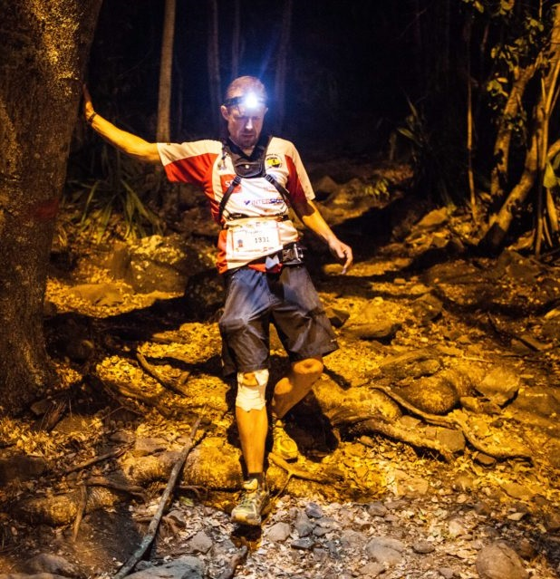
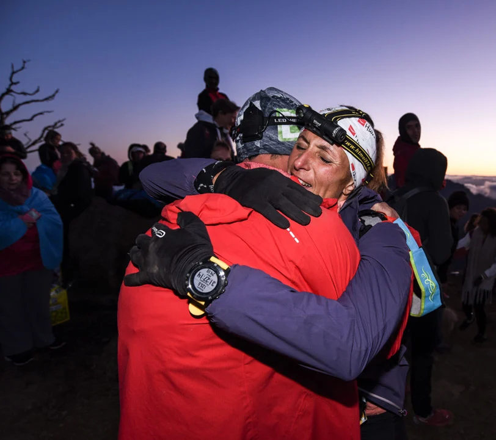
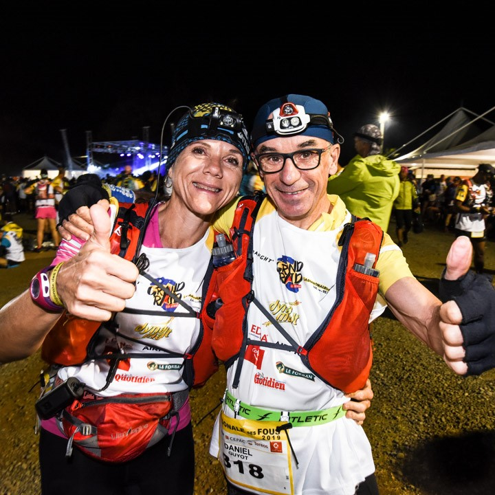
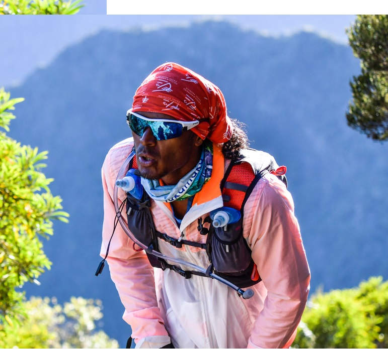

Quatre courses mythiques
L'indomptable
La Diagonale des Fous
Avec ses 162 kilomètres et 9576 m de dénivelé positif, cette course est la plus difficile du monde. Chaque année, 1350 fous viennent y trouver la gloire et de beaux mollets d'acier.
L'audacieux
Le trail de Bourbon
Cet ultra-trail totalise plus 110 km de longueur et plus de 6 400 m de dénivelé positif. Au menu de cette course: boue, sueur, larmes, bagarre, honneur et cuisses velues.
La subtile
La Mascareignes
3900m de dénivelé positif sont lovés entre ses 72 kilomètres de sentier, traversant le cirque de Mafate. Le record est sûrement détenu par un Breton. Le lui volerez-vous ?
Le mijauré
Le Zembrocal Trail
Plus connu sous le nom affecteux de "course des petites fiottes qui ont peur de faire avancer leur deux jambes tout seuls", ce parcours s'effectue en relais, sur 173 kilomètres.
Le parcours du Trail de Bourbon
Ils sont en tête!
Qui sommes-nous ?
Des héros. Des combatifs. Des bénévoles.
Article 1 : Organisation
L’association Grand Raid est une association de loi 1901) organise à l’île de la Réunion le Grand Raid communément appelé́ « La Diagonale des Fous », Le Trail de Bourbon, La Mascareignes et le « Zembrocal Trail ».
Article 2 : Définition des épreuves
A) La Diagonale des Fous est un Ultra Trail en semi-autonomie, traversant du Sud au Nord l’île de la Réunion
Pour participer, les concurrents doivent justifier d’avoir terminé lors d’une période précisée par des conditions particulières (disponibles sur le site internet de l’association) deux courses entièrement pédestres, en une seule étape, attribuant chacune au moins 85 points, ceci en considérant le décompte suivant : 1km =1pt et 100m de D+ =1pt.-(par exemple un trail de 60km de long et de 2500D+ vaut 60+25=85 points)
B) Le Trail de Bourbon est un Ultra Trail en semi-autonomie.
Pour participer, les concurrents doivent justifier d’avoir terminé lors d’une période précisée par des conditions particulières (disponibles sur le site internet de l’association) une course entièrement pédestre, en une seule étape, attribuant au moins 75 points selon le décompte suivant : 1km =1pt et 100m de D+ =1pt.-(par exemple un trail de 50km de long et de 2500D+ vaut 50+25=75 points)
C) La Mascareignes est un Trail en semi-autonomie.
Ces épreuves se déroulent en une seule étape au rythme de chacun, prenant en compte les barrières horaires figurant dans le carnet de route et disponibles en ligne.
D) Le Zembrocal Trail est un relais Trail en semi-autonomie.
Chaque équipe est composée de 4 relayeurs.
Le temps maximal de chaque épreuve est précisé dans un tableau de barrières horaires disponible en ligne et figurant dans le carnet de route. Les concurrents ne seront plus classés au-delà̀ de ces délais car hors course. Ils ne pourront prétendre bénéficier de l’assistance mise en place par l’Organisation, laquelle décline toute responsabilité́ pour les conséquences qui pourraient en découler.
Article 3 : Conditions Générales
Tous les concurrents s’engagent à se soumettre sans réserve à ce règlement par le seul fait de leur inscription et dégagent la responsabilité́ des organisateurs pour tout incident ou accident pouvant survenir du fait du non-respect de celui-ci.